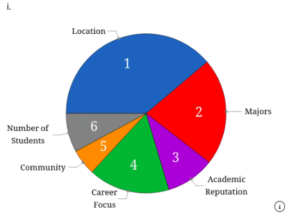
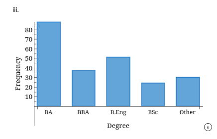
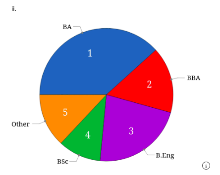
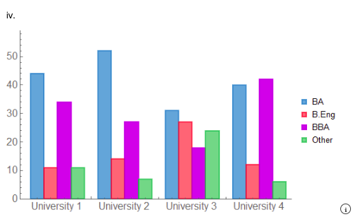
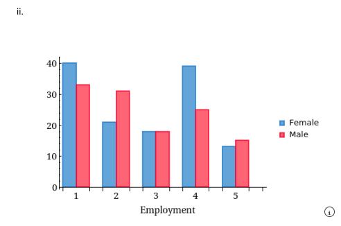
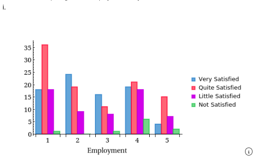

Chapter 2 Assignments
Assignment exercises and answers
Section A: Chapter 2 Assignment
Exercise 02-020 (Types of Data and Information)
At WLU, instructors convert exam marks out of 100 into letter grades using the following scale:
Student X Marks: 77, 86, 77, 70, 67, 70, 61, 62, 54, 38
Student Y Marks: 96, 94, 97, 78, 74, 80, 71, 72, 52, 51
(a) Calculate each student’s average mark.
(b) Convert the individual marks into letter grades and calculate the grade point average where A = 4, B = 3, C = 2, D = 1, and F = 0.
(c) Convert the average of all 10 marks into a letter grade for each student.
What have you observed?
Exercise 02-036 (Describing a Set of Nominal Data)
What are the most important characteristics of colleges and universities? This question was asked of a sample of college-bound high school seniors. The responses are as follows:
The results were stored using these codes. Use a graphical technique to summarize and present the data.
Select the correct graph.

Correct Answer: i
Exercise 02-040 (Describing a Set of Nominal Data)
Who applies to MBA programs? To help determine the background of the applicants, a sample of 230 applicants to a university’s business school was asked to report their undergraduate degree. The degrees were recorded using these codes:
(a) Determine the frequency distribution.
| Degree | Frequency |
|---|---|
| BA | 88 |
| BBA | 37 |
| B.Eng | 51 |
| BSc | 24 |
| Other | 30 |
(b) Draw a bar chart.

Correct Answer: iii
(c) Draw a pie chart.

Correct Answer: ii
(d) What do the charts tell you about the sample of MBA applicants?
Correct Answer: Applicants to the MBA program at this university mostly have BA, B.Eng, or BBA undergraduate degrees.
Exercise 02-064 (Describing the Relationship between Two Nominal Variables and Comparing Two or More Nominal Data Sets)
The associate dean of a business school wants to improve the quality of applicants to its MBA program. In particular, the dean wants to know whether the undergraduate degree of applicants differs among WLU and three nearby universities with MBA programs.
A random sample of 100 applicants from the WLU program and an equal number from each of the other universities was drawn. Their undergraduate degrees were recorded as:
Universities are coded as 1, 2, 3, and 4. Use a graphical technique to display this information.
Select the correct graph.

Correct Answer: iv
Do the undergraduate degree and the university attended appear to be related?
Correct Answer: ii
Exercise 02-065 (Describing the Relationship between Two Nominal Variables and Comparing Two or More Nominal Data Sets)
Is there brand loyalty among car owners in their purchases of gasoline? A random sample of car owners was asked to record the brand of gasoline in their last two purchases:
Create a table showing the column percentages comparing the last two gasoline purchases.
| Second-Last Purchase | Exxon | Amoco | Texaco | Other |
|---|---|---|---|---|
| Exxon | 17.54% | 30.43% | 20.45% | 35.90% |
| Amoco | 15.79% | 17.39% | 30.68% | 23.08% |
| Texaco | 49.12% | 41.30% | 34.09% | 35.90% |
| Other | 17.54% | 10.87% | 14.77% | 5.12% |
Does there appear to be brand loyalty among car owners in their purchases of gasoline?
Since the column percentages are similar, there does not appear to be brand loyalty.
Exercise 02-085 (Describing the Relationship between Two Nominal Variables and Comparing Two or More Nominal Data Sets)
A survey of business school graduates undertaken by a university placement office asked, among other questions, in which area each person was employed. The areas of employment are as follows:
Additional questions were asked and the responses were recorded as follows:
| Column | Variable |
|---|---|
| A | Identification number |
| B | Area |
| C | Gender: Female (1) and Male (2) |
| D | Job satisfaction: Very (1), Quite (2), Little (3), and None (4) |
(a) Draw a chart comparing male and female graduates in their areas of employment.

Correct Answer: ii
Do female and male graduates differ in their areas of employment? If so, how?
Correct Answer: iii
(b) Draw a chart comparing area of employment and job satisfaction.

Correct Answer: i
Are area of employment and job satisfaction related?
Correct Answer: ii